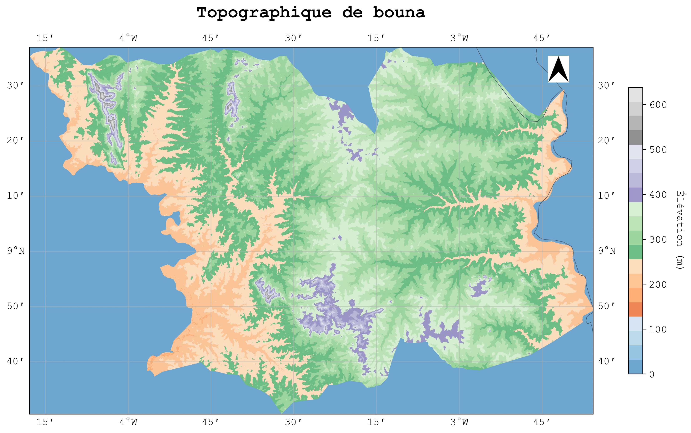

Documentation Cartograpy
Guide complet pour maîtriser la cartographie en Python avec Cartograpy
Présentation
Cartograpy est un package Python conçu pour faciliter la manipulation de données géographiques et la création de cartes de manière simple et intuitive. Grâce à ses nombreuses fonctionnalités, il permet aussi bien aux débutants qu'aux experts de visualiser, analyser et mettre en valeur des données spatiales en quelques lignes de code.

And you have all you need !
Fonctionnalités
Voici ce que vous pouvez faire avec cartograpy :
2.1 Téléchargement et accès rapide aux données géographiques
- • Découpages administratifs : Téléchargez en une ligne les limites administratives de n'importe quel pays, région ou commune.
- • Données de continents : Récupérez facilement les frontières vectorielles des continents ou sous-continents.
- • Réseaux hydrographiques : Accédez à des couches de rivières, fleuves ou plans d'eau.
- • Géocodage des localités : Enrichissez vos jeux de données en retrouvant des zones géographiques associées à des adresses ou des noms de lieux.
2.2 Pre-processing et processing des données
- • Importez tout type de données vectorielles ou matricielles : Shapefile, GeoJSON, KML, GPX, GPKG, CSV, Parquet, etc.
- • Exportez vos analyses dans le format de votre choix, prêt pour QGIS, ArcGIS ou le web.
- • Listing automatique : Repérez en un coup d'œil tous les fichiers géographiques présents dans un dossier.
- • Convertissez vos jeux de données entre tous les formats courants en une seule commande.
- • Calculs de centroïdes, jointures spatiales et attributaires, fusion de tables, création de nouveaux attributs dynamiquement à partir d'expressions Python.
- • Manipulation de DataFrame et GeoDataFrame pour l'analyse de données géographiques.
- • Découpage de données vectoriel par emprise ou par masque.
2.3 Cartographie et visualisation
-
•
Créez des cartes personnalisées (choroplèthes, points, polygones, tuiles raster, etc.) à l'aide de la classe puissante
Map. - • Ajoutez des éléments de style : flèches du nord, barres d'échelle, graticules, labels, titres personnalisés, palettes de couleurs, etc.
- • Gérez vos légendes et choisissez parmi plusieurs styles adaptés (scientifique, épuré, académique…).
- • Exportez vos cartes directement en PNG, SVG ou autres formats.
- • Accédez à des styles de polices et de nombreuses palettes de couleurs, y compris les palettes personnalisées, Seaborn et Matplotlib.
Installation
Pour installer le package cartograpy, vous pouvez utiliser pip. Ouvrez votre terminal ou invite de commande et exécutez la commande suivante :
Note importante
Pour éviter les conflits de dépendances, utilisez un environnement virtuel. Vous pouvez le faire avec pew, virtualenv ou anaconda. J'utilise très souvent pew pour cela.
Utilisation
cartograpy est composé de 4 modules principaux :
data
pour l'obtention des données
processing
pour le traitement des données
mapper
pour la visualisation des données sur une carte
styling
pour la mise en forme de la carte
Obtention des données] A --> C[processing
Traitement des données] A --> D[mapper
Visualisation sur carte] A --> E[styling
Mise en forme de la carte]
4.1.1.1 Télécharger les limites des continents
Pour télécharger les limites de tous les continents du monde, utilisez la méthode continents() sans paramètre :
Résultat :
| Index | CONTINENT | geometry |
|---|---|---|
| 0 | Africa | MULTIPOLYGON (((-11.49609 11.98828, -11.55664... |
| 1 | Antarctica | MULTIPOLYGON (((48.62207 -77.83594, 48.54688... |
| 2 | Asia | MULTIPOLYGON (((48.67923 14.0032, 48.23895... |
| 3 | Europe | MULTIPOLYGON (((-53.55484 2.3349, -53.77852... |
| 4 | North America | MULTIPOLYGON (((-155.22217 19.23972, -155.5421... |
Obtenir un seul continent :
Obtenir plusieurs continents :
4.1.1.2 Télécharger les limites administratives de pays
Pour télécharger les données des limites administratives d'un pays, vous aurez besoin de deux paramètres importants :
le nom du pays et le niveau de subdivision administrative souhaité (adminlevel).
Les noms de pays et codes ISO :
Les codes des pays sont conformes à la norme ISO 3166-1 alpha-3. Pour obtenir la liste des pays valides,
vous pouvez utiliser la méthode list_countries() :
Rechercher le code ISO d'un pays :
Les niveaux de subdivisions administratives :
Il existe cinq (5) niveaux de subdivisions administratives disponibles :
| Niveau GeoBoundaries | Nom commun (FR) | Nom commun (EN) |
|---|---|---|
ADM0 |
Pays | Country |
ADM1 |
Région / État / Province | State / Region |
ADM2 |
Département / District | District / County |
ADM3 |
Sous-préfecture / Commune | Subdistrict / Commune |
ADM4 |
Village / Localité | Village / Locality |
Note importante :
- Le nombre de niveaux dépend du pays. Certains pays s'arrêtent à ADM2, d'autres vont jusqu'à ADM4 ou ADM5.
- Le nom réel des subdivisions varie d'un pays à l'autre (ex. : « State », « Region », « Province », « Department », etc.).
- GeoBoundaries propose toujours au moins le niveau ADM0 (frontière nationale).
Télécharger les données administratives d'un pays :
Télécharger les données de plusieurs pays :
4.1.1.3 Récupérer les métadonnées d'un territoire
Pour aller plus loin que la simple récupération des limites géographiques, vous pouvez également obtenir des informations
descriptives sur un territoire grâce à la méthode metadata.
📊 Output - Métadonnées disponibles:
🌍 Informations détaillées - Côte d'Ivoire:
| Propriété | Valeur |
|---|---|
| Nom du pays | Côte d'Ivoire |
| Code ISO | CIV |
| Continent | Africa |
| Sous-région | Western Africa |
| Type de frontière | ADM0 |
4.1.2 Géocoder une ou plusieurs adresses
La classe Geocoder de cartograpy.data permet de convertir des adresses textuelles en coordonnées géographiques et vice versa.
from cartograpy import data
# Créer un objet Geocoder
geocoder = data.Geocoder()
# Géocoder une adresse
result = geocoder.geocode("Abidjan, Côte d'Ivoire")
print(f"Coordonnées: {result['latitude']}, {result['longitude']}")
# Géocodage inverse
address = geocoder.reverse_geocode(5.3599517, -4.0082563)
print(f"Adresse: {address}")📍 Géocodage direct:
🔄 Géocodage inverse:
# Géocoder plusieurs adresses
addresses = [
"Yamoussoukro, Côte d'Ivoire",
"Bouaké, Côte d'Ivoire",
"Daloa, Côte d'Ivoire"
]
results = []
for addr in addresses:
result = geocoder.geocode(addr)
results.append({
'ville': addr.split(',')[0],
'latitude': result['latitude'],
'longitude': result['longitude'],
'confidence': result.get('confidence', 'N/A')
})
import pandas as pd
df_geocoded = pd.DataFrame(results)
print(df_geocoded)📋 DataFrame des résultats de géocodage:
| Ville | Latitude | Longitude | Confidence |
|---|---|---|---|
| Yamoussoukro | 6.8276 | -5.2893 | 0.95 |
| Bouaké | 7.6884 | -5.0303 | 0.92 |
| Daloa | 6.8771 | -6.4503 | 0.89 |
4.1.3 Télécharger des données hydrographiques
La classe Hydro permet de télécharger facilement les données de réseaux hydrographiques à l'échelle des continents, en s'appuyant sur la base de données internationale HydroRivers.
from cartograpy import data
# Créer un objet Hydro
hydro = data.Hydro()
# Voir les variables disponibles
print(hydro.describe_variables())
# Régions disponibles
print(hydro.valid_regions) # ['af', 'as', 'au', 'eu', 'na', 'sa']
# Télécharger les rivières d'Afrique
rivers_africa = hydro.download(region="af")
rivers_africa.head()🌊 Output - Données HydroRIVERS (5 premières lignes):
| HYRIV_ID | LENGTH_KM | DIS_AV_CMS | UPLAND_SKM | ORD_STRA | RIV_ORD |
|---|---|---|---|---|---|
| 20000001 | 5.847 | 12.4 | 894.2 | 3 | 3 |
| 20000002 | 3.124 | 8.7 | 567.8 | 2 | 2 |
| 20000003 | 12.456 | 45.2 | 2156.7 | 4 | 4 |
| 20000004 | 7.893 | 23.1 | 1234.5 | 3 | 3 |
| 20000005 | 15.234 | 78.9 | 3456.8 | 5 | 5 |
💡 Dimensions: (125,847 lignes × 25 colonnes)
# Visualiser les rivières avec geopandas
import matplotlib.pyplot as plt
# Filtrer les rivières principales (ordre >= 4)
major_rivers = rivers_africa[rivers_africa['ORD_STRA'] >= 4]
# Créer une carte
fig, ax = plt.subplots(1, 1, figsize=(12, 8))
rivers_africa.plot(ax=ax, color='lightblue', linewidth=0.5, alpha=0.7)
major_rivers.plot(ax=ax, color='darkblue', linewidth=1.2)
ax.set_title('Réseau hydrographique d\'Afrique', fontsize=16)
ax.set_xlabel('Longitude')
ax.set_ylabel('Latitude')
plt.show()🗺️ Aperçu de la visualisation:
Carte du réseau hydrographique d'Afrique
Rivières principales en bleu foncé
Réseau secondaire en bleu clair
📊 Statistiques: ~125,000 segments de rivières visualisés
📊 Variables HydroRIVERS disponibles
| Variable | Description | Unité |
|---|---|---|
HYRIV_ID | ID du tronçon | entier |
LENGTH_KM | Longueur du segment | km |
DIS_AV_CMS | Débit moyen | m³/s |
UPLAND_SKM | Surface totale en amont | km² |
ORD_STRA | Ordre de Strahler | entier |
4.1.4 Télécharger données de OpenStreetMap
La classe OSM offre une interface simple pour télécharger des données issues d'OpenStreetMap selon une grande variété de besoins.
4.1.4.1 Exploration des tags OSM
from cartograpy import data
# Créer un objet OSM
osm = data.OSM()
# Lister les tags par catégorie
print(osm.list_tags('amenity')) # Services publics
# Rechercher des tags spécifiques
print(osm.search_tags('hospital')) # Tous les tags liés aux hôpitaux
# Combinaisons courantes de tags
print(osm.get_common_tag_combinations()['restaurants'])🏢 Output - Tags 'amenity' disponibles:
🏥 Output - Tags liés aux hôpitaux:
4.1.4.2 Télécharger les données OSM
# Télécharger toutes les écoles à Abidjan
schools = osm.get_data(
"Abidjan, Côte d'Ivoire",
{"amenity": "school"},
data_type="points"
)
# Télécharger les hôpitaux avec géométries polygonales
hospitals = osm.get_data(
"Yamoussoukro, Côte d'Ivoire",
{"amenity": "hospital"},
data_type="polygons"
)
# Télécharger les routes principales
roads = osm.get_data(
"Abidjan",
{"highway": ["primary", "secondary", "trunk"]},
data_type="lines"
)🏫 Output - Écoles à Abidjan (schools.head()):
| Nom | Amenity | Latitude | Longitude | Addr:city |
|---|---|---|---|---|
| École Primaire Plateau | school | 5.3247 | -4.0127 | Plateau |
| Collège Moderne Cocody | school | 5.3514 | -3.9867 | Cocody |
| Lycée Sainte-Marie | school | 5.3189 | -4.0234 | Treichville |
📊 Total: 847 écoles trouvées à Abidjan
🛣️ Statistiques - Routes principales d'Abidjan:
# Visualiser les données OSM sur une carte
import matplotlib.pyplot as plt
import contextily as ctx
# Créer une figure avec sous-graphiques
fig, (ax1, ax2) = plt.subplots(1, 2, figsize=(15, 7))
# Carte 1: Écoles
schools.plot(ax=ax1, color='red', markersize=20, alpha=0.7)
ctx.add_basemap(ax1, crs=schools.crs, source=ctx.providers.OpenStreetMap.Mapnik)
ax1.set_title('Écoles à Abidjan', fontsize=14)
ax1.set_xlabel('Longitude')
ax1.set_ylabel('Latitude')
# Carte 2: Routes
roads.plot(ax=ax2, color='blue', linewidth=2, alpha=0.8)
ctx.add_basemap(ax2, crs=roads.crs, source=ctx.providers.OpenStreetMap.Mapnik)
ax2.set_title('Réseau routier principal d\'Abidjan', fontsize=14)
ax2.set_xlabel('Longitude')
plt.tight_layout()
plt.show()🗺️ Aperçu des cartes générées:
Écoles d'Abidjan
847 établissements scolaires
Réseau routier
779 segments de routes
4.1.5 Obtenir des données de la Banque Mondiale
La classe WorldBank permet d'accéder aux données statistiques de la Banque mondiale pour enrichir vos analyses géospatiales.
from cartograpy import data
# Créer un objet WorldBank
wb = data.WorldBank()
# Rechercher des indicateurs
indicators = wb.search_indicators("population")
print(indicators[:3]) # Afficher les 3 premiers
# Télécharger des données pour un pays spécifique
data_civ = wb.get_data(
{"SP.POP.TOTL": "Population totale"},
"CIV", # Côte d'Ivoire
date=("2010", "2020")
)
# Télécharger pour plusieurs pays
countries_data = wb.get_data(
{"NY.GDP.PCAP.CD": "PIB par habitant"},
["CIV", "SEN", "MLI"],
date=("2015", "2020")
)
print(countries_data.head())🔍 Output - Indicateurs trouvés pour "population":
📊 Population de la Côte d'Ivoire (2010-2020):
| Année | Population | Croissance |
|---|---|---|
| 2015 | 22,701,556 | +2.8% |
| 2018 | 24,905,843 | +2.7% |
| 2020 | 26,378,274 | +2.6% |
💰 PIB par habitant - Afrique de l'Ouest (2020):
| Pays | Code | PIB/hab (USD) | Évolution |
|---|---|---|---|
| Côte d'Ivoire | CIV | 2,286 | +4.2% |
| Sénégal | SEN | 1,488 | +1.5% |
| Mali | MLI | 876 | -1.2% |
# Créer un graphique d'évolution temporelle
import matplotlib.pyplot as plt
import pandas as pd
# Préparer les données pour la visualisation
plt.figure(figsize=(12, 6))
# Graphique 1: Évolution de la population CIV
plt.subplot(1, 2, 1)
years = [2015, 2016, 2017, 2018, 2019, 2020]
population = [22701556, 23295302, 23905931, 24905843, 25631646, 26378274]
plt.plot(years, population, marker='o', color='blue', linewidth=2)
plt.title('Évolution Population - Côte d\'Ivoire')
plt.xlabel('Année')
plt.ylabel('Population')
plt.grid(True, alpha=0.3)
# Graphique 2: Comparaison PIB par habitant
plt.subplot(1, 2, 2)
countries = ['Côte d\'Ivoire', 'Sénégal', 'Mali']
gdp_values = [2286, 1488, 876]
colors = ['#3b82f6', '#10b981', '#f59e0b']
plt.bar(countries, gdp_values, color=colors, alpha=0.8)
plt.title('PIB par habitant 2020 (USD)')
plt.ylabel('PIB par habitant')
plt.xticks(rotation=45)
plt.tight_layout()
plt.show()📈 Aperçu des graphiques générés:
Évolution Population
2015-2020
Croissance: +16.2% en 5 ans
PIB Comparatif
CIV > SEN > MLI
CIV leader économique
💡 Indicateurs populaires
SP.POP.TOTL- Population totaleNY.GDP.PCAP.CD- PIB par habitant (USD courants)SE.PRM.NENR- Taux net de scolarisation primaireSH.DYN.MORT- Taux de mortalité infantileAG.AID.CREL.MT- Aide reçue nette
4.2 Module de Traitement
4.2.1 Préparation des Données
4.2.1.1 Nettoyage des Géométries
Le module de traitement offre des outils pour nettoyer et valider les géométries géospatiales.
from cartograpy import processing
# Nettoyer les géométries invalides
clean_data = processing.clean_geometries(africa_boundaries)
# Simplifier les géométries
simplified = processing.simplify_geometries(clean_data, tolerance=0.01)
# Valider la topologie
validation_report = processing.validate_topology(simplified)
print(validation_report)4.2.1.2 Transformation de Projections
Transformation entre différents systèmes de coordonnées et projections cartographiques.
# Transformer en projection UTM
utm_data = processing.transform_crs(africa_boundaries, target_crs='EPSG:32632')
# Reprojeter en coordonnées géographiques
geographic = processing.to_geographic(utm_data)
# Calculer l'aire des polygones
areas = processing.calculate_areas(utm_data)
print(f"Aires calculées: {areas.head()}")4.2.2 Opérations Spatiales
4.2.2.1 Intersections et Unions
Effectuer des opérations géométriques complexes entre différentes couches.
# Intersection entre deux couches
intersection = processing.intersect(layer1, layer2)
# Union de polygones
union_result = processing.union(africa_boundaries)
# Buffer autour des géométries
buffered = processing.buffer(africa_boundaries, distance=1000) # 1km
# Découpage (clip) d'une couche par une autre
clipped = processing.clip(data_layer, boundary_layer)4.2.2.2 Agrégation Spatiale
Regroupement et agrégation de données géospatiales selon différents critères.
# Agrégation par région
aggregated = processing.aggregate_by_attribute(data, group_by='region')
# Dissolution de frontières
dissolved = processing.dissolve(africa_boundaries, by='continent')
# Statistiques spatiales
stats = processing.spatial_statistics(data, stat_type='area')
print(stats.describe())4.3 Module de Visualisation
4.3.1 Cartes Statiques
4.3.1.1 Cartes Choroplèthes
Création de cartes thématiques avec codage couleur basé sur des valeurs statistiques.
from cartograpy import visualization as viz
# Carte choroplèthe basique
viz.choropleth_map(
data=africa_boundaries,
column='population',
title='Population en Afrique',
colormap='viridis'
)
# Carte avec classification personnalisée
viz.choropleth_map(
data=africa_boundaries,
column='gdp_per_capita',
classification='quantiles',
n_classes=5,
title='PIB par Habitant'
)4.3.1.2 Cartes Multi-Couches
Superposition de plusieurs couches de données géospatiales.
# Création d'une carte multi-couches
fig, ax = viz.create_map(figsize=(12, 8))
# Ajouter les frontières
viz.add_layer(ax, africa_boundaries,
color='lightgray', edgecolor='black')
# Ajouter les villes
viz.add_points(ax, cities_data,
size_column='population',
color='red')
# Ajouter une légende et un titre
viz.add_legend(ax, title='Villes et Frontières')
viz.set_title(ax, 'Carte de l\'Afrique')4.3.2 Cartes Interactives
4.3.2.1 Cartes Folium
Création de cartes interactives pour l'exploration web.
# Carte interactive avec Folium
interactive_map = viz.create_interactive_map(
data=africa_boundaries,
center=[0, 20], # Lat, Lon
zoom=4
)
# Ajouter des popups informatifs
viz.add_popup_info(interactive_map,
columns=['name', 'population'])
# Sauvegarder la carte
interactive_map.save('africa_interactive.html')4.3.2.2 Tableaux de Bord
Création de tableaux de bord interactifs avec Plotly Dash.
# Création d'un tableau de bord
dashboard = viz.create_dashboard(
title="Analyse Géospatiale de l'Afrique"
)
# Ajouter une carte choroplèthe interactive
dashboard.add_choropleth(
data=africa_boundaries,
column='population',
title='Population par Pays'
)
# Ajouter des graphiques complémentaires
dashboard.add_bar_chart(
x='country', y='gdp',
title='PIB par Pays'
)
# Lancer le serveur
dashboard.run(port=8050)5. Exemples Pratiques
5.1 Analyse Démographique Complète
Exemple complet d'analyse démographique utilisant toutes les fonctionnalités de cartograpy.
# Exemple complet : Analyse démographique de l'Afrique de l'Ouest
import cartograpy
from cartograpy import data, processing, visualization as viz
# 1. Acquisition des données
bound = data.GeoBoundaries()
west_africa = bound.continents("africa")
# Filtrer l'Afrique de l'Ouest
west_african_countries = ['SEN', 'MLI', 'BFA', 'CIV', 'GHA', 'TGO', 'BEN', 'NER']
wa_data = bound.adm(west_african_countries, "ADM0")
# 2. Traitement des données
# Nettoyage et simplification
clean_data = processing.clean_geometries(wa_data)
simplified = processing.simplify_geometries(clean_data, tolerance=0.01)
# Calcul des aires
areas = processing.calculate_areas(simplified)
simplified['area_km2'] = areas / 1000000 # Conversion en km²
# 3. Visualisation
# Carte choroplèthe de la superficie
viz.choropleth_map(
data=simplified,
column='area_km2',
title='Superficie des Pays d\'Afrique de l\'Ouest',
colormap='YlOrRd',
figsize=(12, 8)
)
# Carte interactive
interactive_map = viz.create_interactive_map(
data=simplified,
center=[12, -2],
zoom=5
)
viz.add_popup_info(interactive_map,
columns=['shapeName', 'area_km2'])
interactive_map.save('west_africa_analysis.html')
print("Analyse terminée ! Carte sauvegardée dans 'west_africa_analysis.html'")💡 Image de Démonstration
Voici un exemple de résultat de visualisation avec cartograpy :

Carte choroplèthe générée avec le module de visualisation de cartograpy